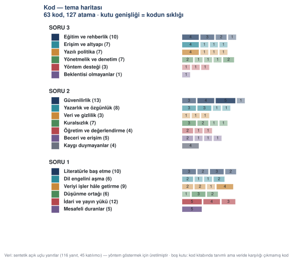
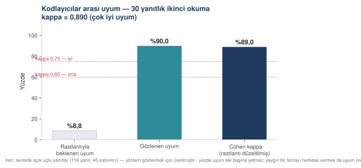
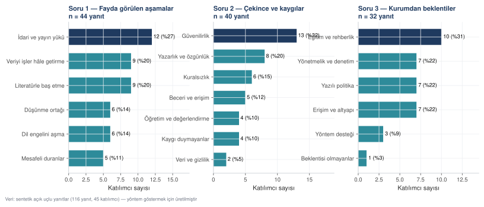

Nitel analiz: tematik analizin altı aşaması
116 açık uçlu Türkçe yanıt üzerinde gerçekten yürütülmüş bir tematik analiz: 63 kod, 19 tema, ikinci kodlayıcı ve Cohen kappa = 0,890.
Nitel analizde araştırmacının kendisi araçtır. Bu, yapay zekânın burada işe yaramayacağı anlamına gelmez — ama rolünün nerede bittiğini baştan bilmeyi gerektirir. Bu bölüm tam bir tematik analizi, altı aşamasıyla, gerçekten yürüterek gösteriyor.
- Boyut
- 116 yanıt · 1.601 kelime · 45 katılımcı · 3 soru
- Pakette
- anket_acik_uclu.csv · 07_acik_uclu_veri.py · 08_tematik_analiz.py · tematik_analiz.txt
Bu metinler sentetiktir. Gerçek katılımcılardan toplanmamıştır. Nedeni şu: açık uçlu yanıt içeren, kişisel veri barındırmayan ve açık lisansla dağıtılabilen Türkçe bir akademisyen anketi mikro verisi kamuya açık değildir. Kursun nicel örnekleri gerçek veri setleriyle yürütüldü; yalnız bu nitel katman üretildi. Üreten betik pakettedir.
Braun ve Clarke'ın altı aşaması
Tematik analiz, "okuyup tema çıkarma" değildir. Altı aşamalı, her aşaması kaydedilebilir bir yöntemdir.
Veriye aşinalık. Bütün veri okunur; bu aşamada kod üretilmez, yalnız kenar notu alınır. Betikle ölçülemeyen tek aşamadır — ama süresi ve not sayısı raporlanabilir.
İlk kodların üretimi. Her anlamlı birim bir ya da birden çok kodla işaretlenir. Kod bir etikettir, yorum değil.
Temaların aranması. Kodlar, ortak bir örüntü etrafında gruplanır. Bir tema bir kodlar kümesidir, bir kodun büyütülmüş hâli değil.
Temaların gözden geçirilmesi. İki soru: tema içindeki kodlar gerçekten bir arada mı duruyor (iç tutarlılık), temalar birbirinden ayrışıyor mu (dış ayrıklık)? Güvenilirlik denetimi bu aşamada yapılır.
Temaların tanımlanması ve adlandırılması. Her temaya bir ad ve bir-iki cümlelik tanım. Ad betimleyici olmalı; "zorluklar" değil, "kuralsızlık".
Raporlama. Sıklıklar, temsil edici alıntılar, tema haritası.
Aşama 1 — Veriye aşinalık
Veri : 116 açık uçlu yanıt, 1.601 kelime, 45 katılımcı Okuma turu : 2 Kenar notu : 41 Süre : 95 dakika Yanıtların tamamı iki kez okundu; ilk okumada kod üretilmedi, yalnız kenar notu alındı. Kodlar ikinci okumada üretildi.
Aşama 2 — İlk kodların üretimi
ROL
Nitel araştırma yöntemleri konusunda çalışan bir araştırma
asistanısın. Braun ve Clarke'ın tematik analiz yaklaşımını
biliyorsun.
KAYNAK
Ekte bir anketin açık uçlu yanıtları var: katilimci_no, soru_no,
yanit sütunları. [n] yanıt.
ARAŞTIRMA SORUSU
[sorunuzu yazın]
GÖREV
Her yanıt için bir ya da birden çok KOD öner. Kod, yanıtta geçen
anlamlı bir içeriği adlandıran kısa bir etikettir.
KODLAMA KURALLARI
— Kod betimleyici olsun, yorumlayıcı değil. Yanıtta ne söylendiğini
adlandır, ne demek istendiğini değil.
— Bir yanıt birden çok şey söylüyorsa birden çok kod ver.
— Aynı içerik için her zaman aynı kodu kullan; eşanlamlı kod üretme.
— Kod adları 2–5 kelime olsun.
— Hiçbir şey söylemeyen, konuya değmeyen yanıtlar için
"kodlanamaz" yaz. Zorlama kod üretme.
ÇIKTI — iki bölüm
BÖLÜM 1 — KOD ÖNERİLERİ
| Katılımcı | Soru | Yanıt (ilk 50 karakter) | Önerilen kod(lar) |
BÖLÜM 2 — KOD KİTABI TASLAĞI
| Kod | Tanım (tek cümle) | Kaç yanıtta geçti | Örnek yanıt no |
SINIRLAR
— Yanıtta olmayan bir içeriği koda dönüştürme.
— Katılımcı hakkında çıkarım yapma ("bu kişi muhtemelen…").
— Kodları henüz temalara gruplandırma; bu ayrı bir aşama.
— Yanıtları yeniden yazma ya da düzeltme; olduğu gibi alıntıla.
DENETİM
— Kodlanan yanıt sayısı ile verilen yanıt sayısı eşit mi?
— Kaç yanıta birden çok kod verildi?
— Yalnız bir yanıtta geçen kod kaç tane? (Bunlar ya birleştirilmeli
ya da gerçekten özgün bir içeriktir — ayırt etmemi sağla.)ROL
Nitel araştırma yöntemleri konusunda çalışan bir araştırma
asistanısın. Braun ve Clarke'ın tematik analiz yaklaşımını
biliyorsun.
KAYNAK
Ekte sözlü tarih görüşmelerinin dökümü var: gorusme_dokumleri.csv
Sütunlar: gorusmeci_no, dogum_yili, meslek, soru_no, yanit
32 görüşmeci, dört açık uçlu soru, toplam 1.148 yanıt birimi.
Görüşmeler 2024–2025'te yapıldı, ses kayıtlarından çözümlendi.
ARAŞTIRMA SORUSU
1960–1980 arasında köyden kente göç eden birinci kuşak göçmenlerin,
geride bıraktıkları yere ilişkin anlatılarında hangi örüntüler var?
GÖREV
Her yanıt birimi için bir ya da birden çok KOD öner. Kod, yanıtta
geçen anlamlı bir içeriği adlandıran kısa bir etikettir.
KODLAMA KURALLARI
— Kod betimleyici olsun, yorumlayıcı değil. Yanıtta ne söylendiğini
adlandır, ne demek istendiğini değil.
— Bir yanıt birden çok şey söylüyorsa birden çok kod ver.
— Aynı içerik için her zaman aynı kodu kullan; eşanlamlı kod
üretme.
— Kod adları 2–5 kelime olsun.
— Hiçbir şey söylemeyen, konuya değmeyen yanıtlar için
"kodlanamaz" yaz. Zorlama kod üretme.
SÖZLÜ TARİHE ÖZGÜ KURALLAR
— Görüşmecinin anlattığı OLAY ile olaya yüklediği ANLAM ayrı
kodlanmalı. "1973'te taşındık" bir olay, "orayı bir daha hiç
göremedim" bir anlamdır.
— Zaman belirsizliklerini kod olarak işaretle ("o yıllarda",
"bir ara"). Sözlü tarihte bu belirsizlik veridir, eksiklik değil.
— Görüşmecinin kendi sözcüklerini koru. "Gurbet" demişse "göç"
diye kodlama; ayrı bir kod aç.
— Aynı olayın iki görüşmecide farklı anlatılması bir çelişki
değildir; iki ayrı kayıt olarak kodla.
ÇIKTI — iki bölüm
BÖLÜM 1 — KOD ÖNERİLERİ
| Görüşmeci | Soru | Yanıt (ilk 50 karakter) | Önerilen kod(lar) |
BÖLÜM 2 — KOD KİTABI TASLAĞI
| Kod | Tanım (tek cümle) | Kaç yanıtta geçti | Örnek yanıt no |
SINIRLAR
— Yanıtta olmayan bir içeriği koda dönüştürme.
— Görüşmeci hakkında çıkarım yapma ("bu kişi muhtemelen...").
— Kodları henüz temalara gruplandırma; bu ayrı bir aşama.
— Yanıtları yeniden yazma, düzeltme ya da ağız özelliklerini
standartlaştırma; olduğu gibi alıntıla.
— Tarihsel bilgi düzeltmesi yapma. Görüşmeci yanlış bir tarih
söylediyse düzeltme, söylediği gibi kodla; doğrulama ayrı bir iş.
DENETİM
— Kodlanan yanıt sayısı ile verilen yanıt sayısı eşit mi?
— Kaç yanıta birden çok kod verildi?
— Yalnız bir yanıtta geçen kod kaç tane? Bunlar ya birleştirilmeli
ya da gerçekten özgün bir içeriktir — ayırt etmemi sağla.
— "Olay" kodu ile "anlam" kodu dağılımı nasıl? Biri ezici
çoğunluktaysa kodlama bir yöne kaymış olabilir.Üretilen kod sayısı : 63 Yapılan kod ataması : 127 Yanıt başına ortalama kod : 1,09 Çok kodlu yanıt sayısı : 10
Aşama 3 — Kodların temalara toplanması
SORU 1 — Fayda görülen aşamalar 19 kod → 6 tema Literatürle baş etme ← S1-L1, S1-L2, S1-L3, S1-L4 Dil engelini aşma ← S1-D1, S1-D2, S1-D3, S1-D4 Veriyi işler hâle getirme ← S1-V1, S1-V2, S1-V3, S1-V4 Düşünme ortağı ← S1-Z1, S1-Z2, S1-Z3 İdari ve yayın yükü ← S1-Y1, S1-Y2, S1-Y3 Mesafeli duranlar ← S1-M1 SORU 2 — Çekince ve kaygılar 23 kod → 7 tema Güvenilirlik ← S2-G1, S2-G2, S2-G3, S2-G4 Yazarlık ve özgünlük ← S2-O1, S2-O2, S2-O3, S2-O4 Veri ve gizlilik ← S2-V1, S2-V2, S2-V3 Kuralsızlık ← S2-K1, S2-K2, S2-K3, S2-K4 Öğretim ve değerlendirme ← S2-E1, S2-E2, S2-E3 Beceri ve erişim ← S2-B1, S2-B2, S2-B3, S2-B4 Kaygı duymayanlar ← S2-N1 SORU 3 — Kurumdan beklentiler 21 kod → 6 tema Eğitim ve rehberlik ← S3-R1, S3-R2, S3-R3, S3-R4 Erişim ve altyapı ← S3-A1, S3-A2, S3-A3, S3-A4 Yazılı politika ← S3-P1, S3-P2, S3-P3, S3-P4 Yönetmelik ve denetim ← S3-Y1, S3-Y2, S3-Y3, S3-Y4, S3-Y5 Yöntem desteği ← S3-M1, S3-M2, S3-M3 Beklentisi olmayanlar ← S3-S1



Aşama 4 — Güvenilirlik: ikinci okuma
Temalar gözden geçirilirken sorulan soru şudur: başka biri aynı veriden aynı temalara varır mı? Bunu sınamak için yanıtların bir bölümü ikinci kez, ilk kodlar görülmeksizin kodlanır ve iki kodlama karşılaştırılır. İkinci kodlamayı başka biri yaparsa ölçülen şey kodlayıcılar arası uyum, aynı kişi bir süre sonra yaparsa kodlayıcı içi uyumdur. Kappa iki durumda da aynı formülle hesaplanır ama kanıt değeri farklıdır: kodlayıcılar arası uyum daha güçlüdür, çünkü araştırmacının kendi alışkanlığını dışarıda bırakır.
Bu kurstaki ikinci kodlama, ilk kodlar görülmeksizin aynı araştırmacı tarafından yapıldı; dolayısıyla aşağıdaki sayı kodlayıcı içi uyumdur. Kendi çalışmanızda ikinci kodlayıcıyı başka biri yapabiliyorsa yapın; yapamıyorsanız hangisi olduğunu yöntem bölümünde açıkça yazın.
kappa" tur="ham" İkinci okumaya alınan yanıt : 30 (tüm yanıtların %26'sı) Gözlenen uyum : %90,0 Rastlantıyla beklenen uyum : %8,8 Cohen kappa : 0,890 → çok iyi uyum
UYUŞMAYAN ÜÇ YANIT
K085 / Soru 1 1. okuma : İdari ve yayın yükü 2. okuma : Düşünme ortağı yanıt : «Nitel veri kodlamada deniyorum. Görüşme dökümlerini verip ilk kodları çıkarttırıyorum, sonra kendim gözden geçiriyorum. Zaman kazandırıyor ama kodların yarısını değiştiriyorum.»
K094 / Soru 1 1. okuma : Literatürle baş etme 2. okuma : Dil engelini aşma yanıt : «Literatür ve dil. Bu ikisi dışında kullanmıyorum, kullanmak da istemiyorum.»
K013 / Soru 3 1. okuma : Yazılı politika 2. okuma : Yönetmelik ve denetim yanıt : «Yasaklanmasını bekliyorum ama olmayacağını biliyorum. O hâlde en azından sınır konsun.»



Aşama 5–6 — Sıklıklar ve alıntılar



| Tema | Katılımcı | % | Kod ataması |
|---|---|---|---|
| İdari ve yayın yükü | 12 | 27 | 12 |
| Literatürle baş etme | 9 | 20 | 10 |
| Veriyi işler hâle getirme | 9 | 20 | 9 |
| Dil engelini aşma | 6 | 14 | 6 |
| Düşünme ortağı | 6 | 14 | 6 |
| Mesafeli duranlar | 5 | 11 | 5 |
Temsil edici alıntı — Düşünme ortağı (K043): «Fikir aşamasında. Kafamdaki yarım fikri anlatıp üstüne konuşuyorum, bir tür düşünme ortağı gibi. Çıktısını kullanmıyorum, konuşmanın kendisi fayda veriyor.»
| Tema | Katılımcı | % | Kod ataması |
|---|---|---|---|
| Güvenilirlik | 13 | 32 | 13 |
| Yazarlık ve özgünlük | 8 | 20 | 8 |
| Kuralsızlık | 6 | 15 | 7 |
| Beceri ve erişim | 5 | 12 | 5 |
| Kaygı duymayanlar | 4 | 10 | 4 |
| Öğretim ve değerlendirme | 4 | 10 | 4 |
| Veri ve gizlilik | 2 | 5 | 3 |
Temsil edici alıntı — Güvenilirlik (K112): «Atıf uydurmasının en sinsi hâli: gerçek bir DOI'ye yanlış başlık yakıştırması. DOI açılıyor, yazı başka. Kontrol ederken açılıyor mu diye bakmak yetmiyor.»
| Tema | Katılımcı | % | Kod ataması |
|---|---|---|---|
| Eğitim ve rehberlik | 10 | 31 | 10 |
| Erişim ve altyapı | 7 | 22 | 7 |
| Yazılı politika | 7 | 22 | 7 |
| Yönetmelik ve denetim | 7 | 22 | 7 |
| Yöntem desteği | 3 | 9 | 3 |
| Beklentisi olmayanlar | 1 | 3 | 1 |
Temsil edici alıntı — Eğitim ve rehberlik (K004): «Eğitim. Ama bir saatlik tanıtım değil, elini kirleterek yapılan, kendi verimle çalıştığım bir atölye.»
Betimsel analiz ile tematik analizin farkı
Betimsel içerik analizi
Ne söylendiğini sayar
Önceden belirlenmiş kategorilere göre, metinde hangi içeriğin kaç kez geçtiği sayılır. Kategoriler veriden değil kuramdan ya da önceki çalışmalardan gelir. Sonuç bir frekans tablosudur. Hızlıdır ve tekrarlanabilirliği yüksektir.
Tematik analiz
Örüntüyü veriden çıkarır
Kodlar veriden türetilir, temalar kodlardan oluşur. Araştırmacının yorumu yöntemin parçasıdır. Sonuç bir tema yapısıdır. Daha yavaştır, daha derindir ve güvenilirliği ikinci kodlayıcıyla gösterilir.
Nitel bulguları yazmak
ROL Nitel araştırma yayımlayan bir araştırmacı olarak Bulgular bölümünü yazıyorsun. KAYNAK Ekte üç dosya: — tematik_analiz.json: tema yapısı, sıklıklar, kodlayıcı uyumu — tematik_kod_kitabi.csv: 63 kodun tanımları — anket_acik_uclu.csv: ham yanıtların tamamı GÖREV Nitel bulgular bölümünü yaz. YAPI Her tema için: 1. Tema adı — alt başlık olarak 2. Tanım — temanın neyi kapsadığı, 2–3 cümle 3. Kapsam — kaç katılımcının bu temaya değindiği 4. İçerik — temaya giren kodların anlattığı örüntü, 1–2 paragraf 5. Alıntı — en çok iki alıntı, her biri katılımcı numarasıyla ALINTI SEÇME ÖLÇÜTLERİ — Temayı en açık gösteren yanıtı seç, en uzun olanı değil — Aynı katılımcıdan birden çok tema için alıntı yapma — Alıntıyı kısaltıyorsan kesilen yeri […] ile göster — Yanıtı düzeltme; yazım hatası varsa olduğu gibi bırak ÜSLUP — Resmî akademik Türkçe — Alıntıları italik ya da tırnak içinde, katılımcı kodu parantezde — Temalar arası geçişlerde bağlantı cümleleri kur; temalar birbirinden kopuk listelenmesin SINIRLAR — Hiçbir alıntıyı değiştirme, birleştirme ya da uydurma. Her alıntı ham veri dosyasında birebir bulunmalı. — Nitel bulgudan nicel genelleme çıkarma. "Katılımcıların %32'si" yerine "katılımcıların önemli bir bölümü (13/40)" yaz. — Bulguyu yorumlama; bu Bulgular bölümü, Tartışma değil. — Veride olmayan bir temadan söz etme. DENETİM Bölümün sonunda: — Kaç tema raporlandı? Tema yapısındaki sayıyla eşit mi? — Kaç alıntı kullanıldı, kaç farklı katılımcıdan? — Her alıntının ham veri dosyasında bulunduğunu doğruladın mı?
ROL Nitel araştırma yayımlayan bir araştırmacı olarak Bulgular bölümünü yazıyorsun. KAYNAK Ekte üç dosya: — tematik_analiz.json: 19 tema, 63 kod, sıklıklar, kodlayıcı uyumu (Cohen kappa = 0,890) — tematik_kod_kitabi.csv: 63 kodun tanımları — anket_acik_uclu.csv: 116 ham yanıtın tamamı ARAŞTIRMA SORUSU Akademisyenler üretken yapay zekâ araçlarını araştırma süreçlerinin hangi aşamalarında yararlı buluyor, hangi kaygıları taşıyor ve kurumlarından ne bekliyor? GÖREV Nitel bulgular bölümünü yaz. YAPI Üç ana başlık (üç soru), her başlık altında temalar sıklığa göre. Her tema için: 1. Tema adı — alt başlık olarak 2. Tanım — temanın neyi kapsadığı, 2–3 cümle 3. Kapsam — kaç katılımcının bu temaya değindiği 4. İçerik — temaya giren kodların anlattığı örüntü, 1–2 paragraf 5. Alıntı — en çok iki alıntı, her biri katılımcı numarasıyla ALINTI SEÇME ÖLÇÜTLERİ — Temayı en açık gösteren yanıtı seç, en uzun olanı değil — Aynı katılımcıdan birden çok tema için alıntı yapma — Alıntıyı kısaltıyorsan kesilen yeri […] ile göster — Yanıtı düzeltme; yazım hatası varsa olduğu gibi bırak BU ANALİZE ÖZGÜ — "Mesafeli duranlar" ve "Kaygı duymayanlar" temalarını da raporla. Azınlık temalarını atlamak bulguyu çarpıtır. — Kodlayıcılar arası uyum (kappa = 0,890) ve uyuşmayan üç yanıtın nasıl çözüldüğü, bölümün başında kısaca verilsin. — Veri sentetik. Bölümün başına bunu belirten bir cümle koy. ÜSLUP — Resmî akademik Türkçe — Alıntılar tırnak içinde, katılımcı kodu parantezde — Temalar arası geçişlerde bağlantı cümleleri kur SINIRLAR — Hiçbir alıntıyı değiştirme, birleştirme ya da uydurma. Her alıntı ham veri dosyasında birebir bulunmalı. — Nitel bulgudan nicel genelleme çıkarma. "Katılımcıların %32'si" yerine "katılımcıların önemli bir bölümü (13/40)" yaz. — Bulguyu yorumlama; bu Bulgular bölümü, Tartışma değil. — Veride olmayan bir temadan söz etme. DENETİM Bölümün sonunda: — Kaç tema raporlandı? Tema yapısındaki sayıyla (19) eşit mi? — Kaç alıntı kullanıldı, kaç farklı katılımcıdan? — Her alıntının ham veri dosyasında bulunduğunu doğruladın mı?
import re
import pandas as pd
yanitlar = pd.read_csv("anket_acik_uclu.csv")["yanit"].tolist()
metin = open("bulgular.md", encoding="utf-8").read()
# Tirnak icindeki her pasaji cikar (« » ya da " ")
alintilar = re.findall(r"«(.+?)»", metin, flags=re.S)
bulunamayan = []
for a in alintilar:
temiz = " ".join(a.replace("[…]", "…").split())
# Kesilmis alinti olabilir: parcalarin her biri aranir
parcalar = [p.strip() for p in temiz.split("…") if len(p.strip()) > 15]
for p in parcalar:
if not any(p in " ".join(y.split()) for y in yanitlar):
bulunamayan.append(p[:70])
print(f"Metindeki alinti sayisi : {len(alintilar)}")
print(f"Ham veride bulunamayan parca : {len(bulunamayan)}")
for b in bulunamayan:
print(f" BULUNAMADI: {b}…")Bu bölümden alınacaklar
Tematik analiz altı aşamalı bir yöntemdir; her aşaması kaydedilir ve raporlanır.
Model kod önerir, siz karar verirsiniz. Bu kurstaki analizde model önerilerinin yaklaşık yarısı değiştirildi.
Kod kitabı ve kod atamaları ham veriyle birlikte yayımlanır; nitel analizin yeniden üretilebilirliği buna bağlıdır.
Güvenilirlik, ikinci bir okumayla ve Cohen kappa ile gösterilir. Kappa'nın 1,00 olmaması kusur değil; uyuşmazlıkların nasıl çözüldüğünü yazmamak kusurdur.
Sıklık, kod sayısıyla değil kaç farklı katılımcının değindiğiyle ölçülür.
Nitel veriden nicel genelleme çıkarılmaz. "13/40" yazılır, "%32'si" yazılmaz.
Metindeki her alıntının ham veride birebir bulunduğu makineyle doğrulanır.
Akademide Üretken Yapay Zekâ — uygulamalı kurs. Hazırlayan: Dr. Mehmet Sevri, Recep Tayyip Erdoğan Üniversitesi. Bu sayfadaki bütün sayısal çıktılar, yanındaki kod ve veri dosyalarıyla yerel olarak üretilmiştir; hiçbiri elle yazılmamıştır.
Kullanılan gerçek veri setleri CC BY 4.0 ile dağıtılmaktadır ve kaynakları ilgili bölümde künyeleriyle verilmiştir. Sentetik veri kullanılan yerler açıkça işaretlenmiştir.
Buradaki istemler ve çıktılar öğretim malzemesidir. Yapay zekâ araçlarının kullanımından doğan hatalardan, uydurma kaynaklardan ve bunların yer aldığı çalışmalardan kurs ve hazırlayanı sorumlu tutulamaz; sorumluluk aracı kullanan araştırmacıya aittir. Sorumluluk ve etik beyanı · Dr. Mehmet Sevri — kişisel sayfa